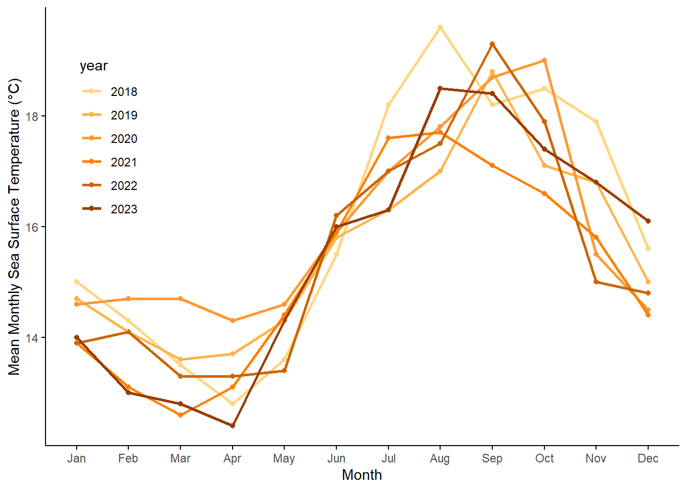
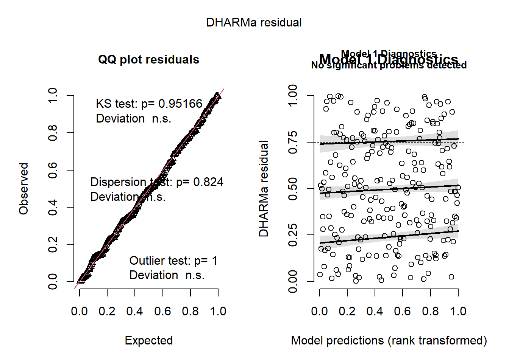
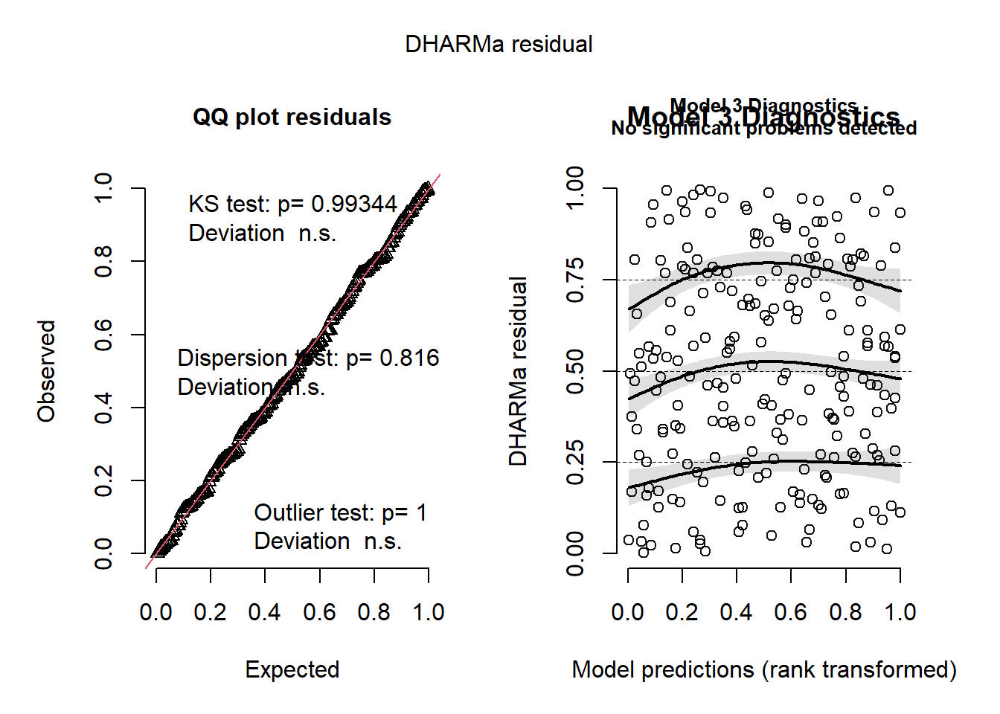
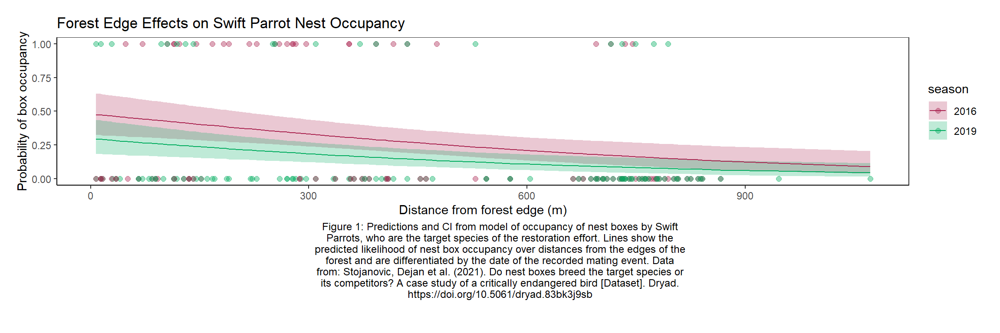

# reading in packages
library(tidyverse) # general use
library(here) # file organization
library(janitor) # cleaning data frames
library(gt) # table making
library(readxl) # reading excel files
library(ggeffects) # getting model predictions
library(dplyr)
library(MuMIn)
library(DHARMa)
library(here)
sst <- read.csv(here("data", "SST_update2023.csv"))
nest_boxes <- read.csv( here("data", "occdist.csv") ) |>
clean_names() |>
mutate(sp = as.numeric(as.character(sp))) |>
mutate(season = factor(season))Final
Repository: https://github.com/ckiorlinski/ENVS-193DS_spring-2025_final.git
Set up
Problem 1: Research Writing
a.
In part 1, they used a Pearson’s correlation test to how the two variables relate to/are associated with each other; the variables in this case being distance from headwater (km) and annual total nitrogen load (kg year-1). In part 2, they used a one way ANOVA test to compare the means of more than two groups to identify if there is a significant difference based on one independent variable. The independent variable in this case is average nitrogen load and the variance of mean between sources are being compared.
b.
The effect size is a relevant piece of information that should have been included in summary of part 2 because it demonstrates the practical significance of results alongside the calculated p value. While a significant p-value shows that a difference exists, effect size demonstrates whether that difference is meaningful and impactful in the real world. Although we know there is a significant difference in the mean nitrogen load between all sources, we do not know the strength of the relationship between variables.
Another piece of information that should have been included in part 2 is the confidence intervals. Having the confidence interval provides crucial context to the result that makes it much easier to quanify and understand without looking at the raw data. In this case, we know that there is some sort of difference in the mean nitrogen load between all sources, we do not know the actual difference in units.
c.
Part 1:
We found a (Relationship Strength) (Pearsons r) relationship between distance from headwater (km) and annual total nitrogen load (kg year^-1) (F(Degrees of Freedom) = test statistic, p = .03, \(\alpha\) = confidence level).
Part 2:
We found a (size) difference (n^2 = Effect size) between sources in average nitrogen load (kg year^-1) (one-way ANOVA, F(Among Groups DF, Within Groups DF) = Test Statistic, p = .02, \(\alpha\) = confidence level).
On average, urban land had less nitrogen load than grasslands (Numeric difference, Confidence Interval), and more than wastewater (Numeric difference, Confidence Interval), etc
Problem 2: Data visualization
a.
sst_clean <- sst |> #making new dataframe for cleaning
mutate(date = ymd(date)) |> #changing date format
mutate(
year = factor(year(date)), #making year a factor
month = factor(month(date, label = TRUE, abbr = TRUE), #making month a factor
levels = month.abb)
) |>
group_by(year, month) |> #grouping by year and month
summarise(
mean_monthly_sst = round(mean(temp, na.rm = TRUE), 1), #rounding mean monthly values
.groups = "drop"
)
slice_sample( #displaying sample
sst_clean, # data frame
n = 5 # showing 5 rows
)# A tibble: 5 × 3
year month mean_monthly_sst
<fct> <ord> <dbl>
1 1993 Jan 14.1
2 2015 Jan 16
3 1988 Sep 16.6
4 1985 Aug 17.7
5 2007 Mar 13 str(sst_clean) #displaying structuretibble [504 × 3] (S3: tbl_df/tbl/data.frame)
$ year : Factor w/ 42 levels "1982","1983",..: 1 1 1 1 1 1 1 1 1 1 ...
$ month : Ord.factor w/ 12 levels "Jan"<"Feb"<"Mar"<..: 1 2 3 4 5 6 7 8 9 10 ...
$ mean_monthly_sst: num [1:504] 13.1 13.5 13.3 12.9 14.4 14.5 15.7 17.1 18.1 17.5 ...b.
monthly_sst <- sst_clean |> #new dataframe from cleaned data
filter(as.integer(as.character(year)) %in% 2018:2023) #only 2018-2023
ggplot(monthly_sst, aes(x = month, #ploting monthly means, x axis month
y = mean_monthly_sst, #y axis mean monthly value
group = year, color = year)) + #grouping and coloring by year
geom_point() + #adding points
geom_line(size = 1) + #adding line
labs(
x = "Month", #x axis ttitle
y = "Mean Monthly Sea Surface Temperature (°C)" #y axis title
) +
scale_color_manual( #setting color scale
values = c( "2018" = "#FFD580", # brighter light orange
"2019" = "#FFB347", # soft orange
"2020" = "#FF9933", # medium orange
"2021" = "#FF8000", # standard orange
"2022" = "#CC6600", # dark orange
"2023" = "#993D00" # very dark burnt orange
)) +
theme_minimal() + #theme
theme(
panel.background = element_blank(), #no panel
panel.grid = element_blank(), #no grid
axis.ticks = element_line(color = "black"), #axis ticks black
axis.line = element_line(color = "black"), #axis lines black
plot.title = element_text(hjust = 0), #no title
legend.position = c(0.1, 0.7), #adjusting legend position
legend.background = element_blank() #no legend background
)
Problem 3: Data analysis
a.
The binary code in this table corresponds with the type of bird that the researchers have decided inhabits that specific nest box based on characteristics such as eggs and foliage used for nest creation. Each column, titled with a one or two letter shorthand, represents the types of birds in the study, such as “sp” for swift parrot. A zero represents that this bird was not in this nest box, whilst a one represents that this bird was present at this nest box.
b.
What sets apart the swift parrot in this study is the fact that they are highly nomadic and do not breed in the same place in successive years. This leaves the nest boxes open for competitors to inhabit, as boxes can be left vaccant if food is not available in the immediate area.
c.
The seasons refereed to in the study reference two distinct food producing tree flowering episodes during 2016 and 2016. The sudden influx of food for the swift parrot induces a mass nesting of the birds in the immediate area. The study compares the nesting patterns between the two events.
d.
4 models total:
| Model number | SzN | Distance to Forest Edge | Predictor list |
|---|---|---|---|
| 0 | 0 | 0 | no predictors (null model) |
| 1 | 1 | 1 | all predictors (full model) |
| 2 | 1 | 0 | Season only |
| 3 | 0 | 1 | Distance only |
e.
# Model 0: null model
model0 <- glm(
sp ~ 1, #what is being predicted ~ predictors
data = nest_boxes, #dataset
family = binomial #binomal data
)
# Model 1: all predictors
model1 <- glm(
sp ~ edge_distance + season,
data = nest_boxes,
family = binomial
)
# Model 2: season only
model2 <- glm(
sp ~ season,
data = nest_boxes,
family = binomial
)
# Model 3: edge distance only
model3 <- glm(
sp ~ edge_distance,
data = nest_boxes,
family = binomial
)f.
# Simulate residuals using DHARMa
res0 <- simulateResiduals(model0)
res1 <- simulateResiduals(model1)
res2 <- simulateResiduals(model2)
res3 <- simulateResiduals(model3)
# Plot dmodel iagnostics
plot(res0, main = "Model 0 Diagnostics")
plot(res1, main = "Model 1 Diagnostics")
plot(res2, main = "Model 2 Diagnostics")
plot(res3, main = "Model 3 Diagnostics")
g.
AICc(model0, #run AIC test to determine the best model
model1,
model2,
model3) |>
arrange(AICc) #arrange AIC values from lowest to highest df AICc
model1 3 226.3133
model3 2 229.6716
model2 2 236.3744
model0 1 238.8318summary(model1) #calculate summary values of model
Call:
glm(formula = sp ~ edge_distance + season, family = binomial,
data = nest_boxes)
Coefficients:
Estimate Std. Error z value Pr(>|z|)
(Intercept) -0.0774902 0.3293209 -0.235 0.813974
edge_distance -0.0020782 0.0006226 -3.338 0.000843 ***
season2019 -0.7791985 0.3390296 -2.298 0.021544 *
---
Signif. codes: 0 '***' 0.001 '**' 0.01 '*' 0.05 '.' 0.1 ' ' 1
(Dispersion parameter for binomial family taken to be 1)
Null deviance: 236.81 on 226 degrees of freedom
Residual deviance: 220.21 on 224 degrees of freedom
AIC: 226.21
Number of Fisher Scoring iterations: 4The best model as determined by Akaike’s Information Criterion (AIC) included both the distance from forest edge and season (F(2, 226) = 16.60, p < 0.001,, \(\alpha\) = .05).
h & i.
model1_predictions <- ggpredict( #using ggpredict to create model predictions
model1,
terms = c("edge_distance [all]", "season") # x-axis: edge.distance, grouping: season
)
df_preds <- as.data.frame(model1_predictions) |> #creating dataframe
rename(season = group) #renaming group column to seasonmy_caption <- str_wrap( #creating wrapped caption
"Figure 1: Predictions and CI from model of occupancy of nest boxes by Swift Parrots, who are the target species of the restoration effort.
Lines show the predicted likelihood of nest box occupancy over distances from the edges of the forest and are differentiated by the date of the recorded mating event.
Data from: Stojanovic, Dejan et al. (2021). Do nest boxes breed the target species or its competitors? A case study of a critically endangered bird [Dataset]. Dryad. https://doi.org/10.5061/dryad.83bk3j9sb",
width = 80 #wraps every 80 characters
)
# base layer: ggplot
# using the model predictions
ggplot(data = nest_boxes, #uncleaned nest box dataset as underlying data
aes(x = edge_distance, #x values edge distance
y = sp, #y values sp binary
color = season)) + #color by season
geom_point(size = 2, #creating points
alpha = .4) +
geom_ribbon(data = df_preds, #creating CI ribbon using model predict dataframe
aes(x = x, #x axis
y = predicted, #y axis
ymin = conf.low, #low of ribbon is CI low
ymax = conf.high, #high of ribbon is CI high
fill = season), #fill color based on season
alpha = 0.25, #transparancy
inherit.aes = FALSE) + #do not inherent previous aes
geom_line(data = df_preds, #creating line of model prediction
aes(x = x, y = predicted, color = season, inherit.aes = FALSE)) + #x and y axis, colored by season, do not inherit aes
# setting colors
scale_color_manual(values = c("2016" = "#AA2450",
"2019" = "#00AC5E")) +
scale_fill_manual(values = c("2016" = "#AA2450",
"2019" = "#00AC5E")) +
# labeling x and y axis
labs(x = "Distance from forest edge (m)", #x axis
y = "Probability of box occupancy", #y axis
title = "Forest Edge Effects on Swift Parrot Nest Occupancy", #title
caption = my_caption #set caption to item generated previously
) +
theme_bw() + #bw theme goat
theme(
panel.grid = element_blank(), #no panel grid
axis.line = element_line(), #no axis line
plot.caption = element_text(hjust = 0.5, size = 9, margin = margin(t = 5, b = 0)), #caption settings
plot.caption.position = "plot", # ensure the caption lives in the outer margin
plot.margin = unit(c(1, 1, 2, 1), "lines") # top, right, bottom, left
)
j.
model1_pred_0900 <- ggpredict( #making prediction of 0 and 900m from forest edge
model1, #using best model
terms = c(
"edge_distance [0, 900]", # only at 0m and 900m
"season" # and for each season
)
)
df_preds_0900 <- as.data.frame(model1_pred_0900) #creating dataframe
print(df_preds_0900) #displaying x predicted std.error conf.low conf.high group
1 0 0.48063714 0.3293209 0.32674430 0.6382939 2016
2 0 0.29803163 0.3205975 0.18466611 0.4431644 2019
3 900 0.12478375 0.3926047 0.06195557 0.2353404 2016
4 900 0.06139379 0.4374157 0.02700370 0.1335685 2019k.
The predicted probability of occupancy at the forest edge (0 m) and farther away from the forest edge (900 m) was shown to decrease dramatically when comparing the 2016 to the 2019 data on swift parrots. The probability of occupancy at the forest edge decreased from 48.1% in 2016 to 29.8% in 2019, while the probability of occupancy further away from the forest edge decreased from 12.5% in 2016 to 6.1% in 2019. There is a negative relationship between distance from forest edge and the probability of occupancy, meaning the further a nest box is from the forest edge, the less likely it is to be occupied. A possible explanation for this observed relationship could be the Swift Parrots interactions with the Tree Martin, a species which is a subordinate nest competitor with the parrot. The Tree Martin has the opposite relationship with the nest box occupancy, where they are more likely to occupy boxes further from the forest edge, so each species has greater nesting where there is less of their competition.
Problem 4: Affective and explanitory visualizations
a.
The visualizations are completely different in the way that I have represented my data. My categorical visualization was organized into boxplots with a jitter, while my continuous visualization was mistakenly a line chart, which did not work with my variable. My final visualization from homework 3 was much more abstract, with the jitterplot points being represented by dendrites on a neuron and the error bar being the length of the axon.
Both of the maps that I created for Homework 2 contain several specific aspects that translated over to my final visualization, but overall the representations are very different. For the categorical visualization, I pulled the categorical aspect by changing my continuous sleep time variable into a categorical bin. I used the data type, reaction time vs sleep time, from my continuous visualization.
Although my first two visualizations from homework 2 were interesting in their own rights, they suffered from a lack of data which hampered their usability. My categorical visualization investigated an aspect of my data recording that I wish I could have looked at more, which was reaction time versus self recorded stress level for the data, which showed an interesting pattern of low and high stress having slower reaction time, while middle stress levels had faster reaction times. The continuous visualization showed the same general trend as my final visualization, where low sleep had slow reaction speed with some increases in the high sleep times.
I did not go to workshop during week 9 for various reasons, but I got really good feedback from my peers during workshop in week 10. Honestly, looking back at my final work, it does not make as much sense as I would have liked even if I think I killed the theme of the neurons. I would try and figure a better way to make the points on my visualization correlate with the actually data.